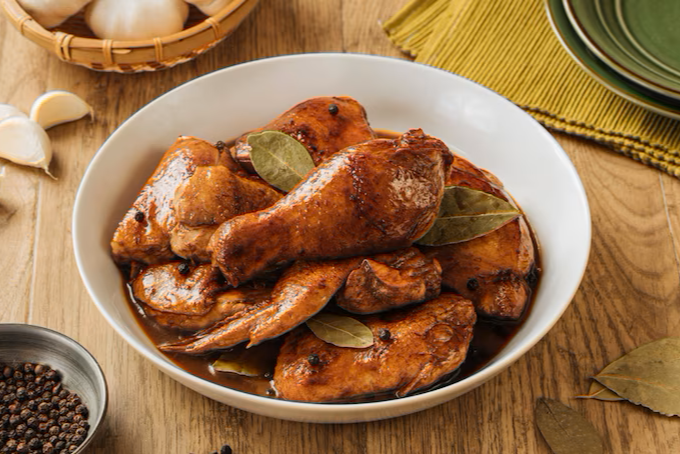

Savor the Best of Filipino Flavors!



Every dish tells a story, every flavor brings Filipino tradition to life.
Experience the warmth and love behind every meal.
Ayala Triangle Gardens
(Facing the Park) Ground Level,
Ayala Triangle Gardens, Paseo De Roxas St Cor Makati Ave, Cor Ayala Ave,
Makati, Metro Manila
+63 967 190 4721 | +63 2 8247 4882
Operating Hours
9 AM - 10 PM (Mon-Sun)